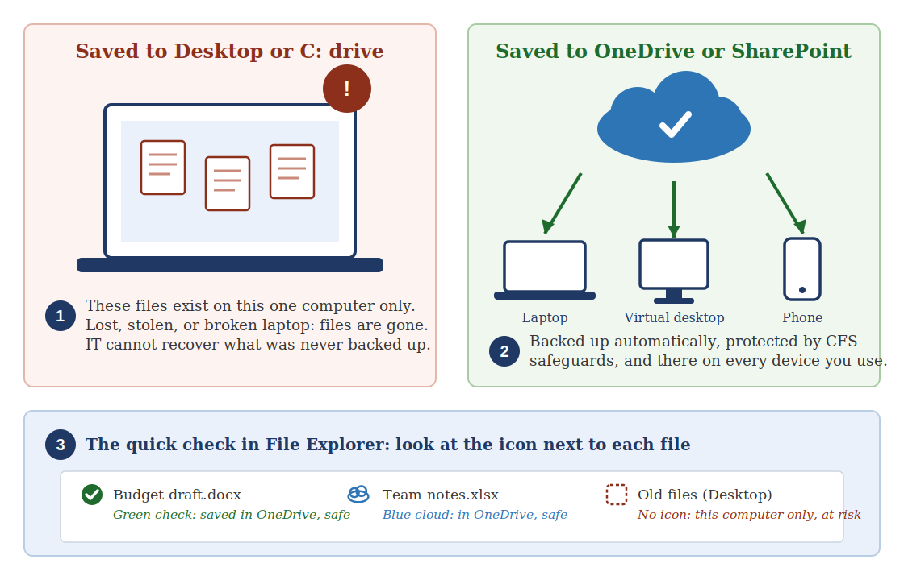

One quick tip. About a minute to read. Something you can use today.
This Week’s Tip
Save your work to OneDrive or SharePoint, not your Desktop or C: drive. Files saved locally live on that one computer only; if the laptop is lost, stolen, or fails, they cannot be recovered.
Why it matters
A file saved to your Desktop, Documents, or Local Disk (C:) exists in exactly one place: that machine. It is not backed up, it is not protected by CFS security and versioning safeguards, and IT cannot recover it if the laptop is lost, stolen, damaged, or simply stops working one morning. A crowded local drive also slows your computer down, and on virtual desktops, files saved locally may not even be there the next time you sign in. Saving to OneDrive or SharePoint fixes all of this at once: your work is backed up automatically, protected, versioned, and available from any device you sign into.
The quick check

The same file, two very different outcomes: local files live and die with one machine; OneDrive files are backed up and follow you everywhere.
Try an AI prompt this week
Open Copilot Chat in Teams and try:
Past issues live on the CFS intranet: IT Help & Resources.
Have a topic idea or question? Email HelpDesk@cfsny.org.
— Jim Noriega and the CFS IT Team